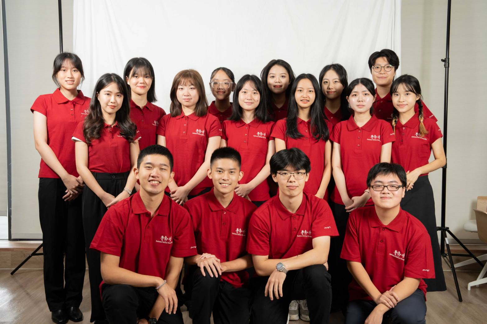
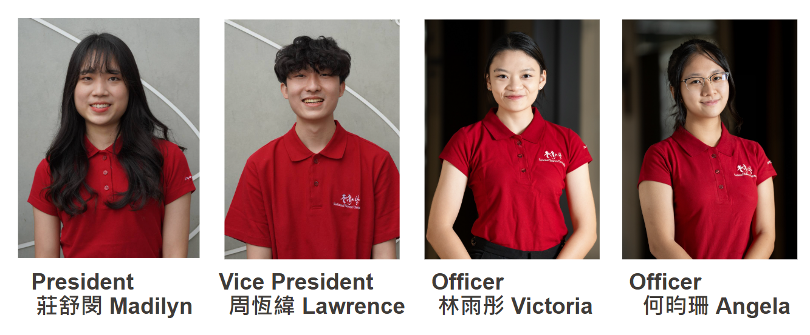

關於我們
臺大禮賓學生即代表本校的學生大使，國際事務處自2007年起每年招募與培訓，完成培訓課程後，即可協助接待國際外賓。藉由禮賓學生計畫，本校學生得以獲得接待國際人士的工作經驗，同時向外賓展現臺大的教育成果。「臺大禮賓學生」所接待的對象為校級訪賓，即外國大學之校長、副校長、行政長官等。

工作內容
- 接待各國來訪外賓，包括協助會議現場工作、圖文記錄、校園導覽
- 接待國際學人，包括接機、協助其在臺生活初步安頓
- 支援辦理國際會議
- 支援國際事務處不定期活動
招募事項
校級禮賓學生計畫每年進行一次招募，於每學年上學期進行甄選，詳細日期時間以當年度公告為準。
（本校同學欲報名禮賓學生，請至臺大國際處官網：國際訪賓與學人→禮賓學生計畫→禮賓學生招募）
- 臺大學生（不限大學部、研究所或博士班）
- 不限國籍（外籍學生須具備基本中文能力）
- 須配合執行任務至少一年整
- 親切、大方、有禮、細心
- 了解臺大並有能力向外賓介紹臺大
校級禮賓學生計畫統籌
Email: wendychen@ntu.edu.tw
第18屆幹部介紹
